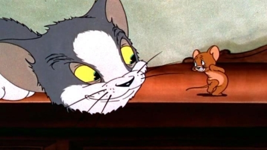
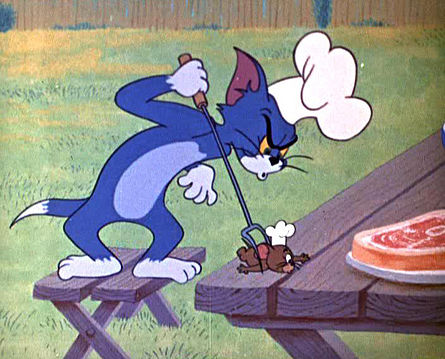
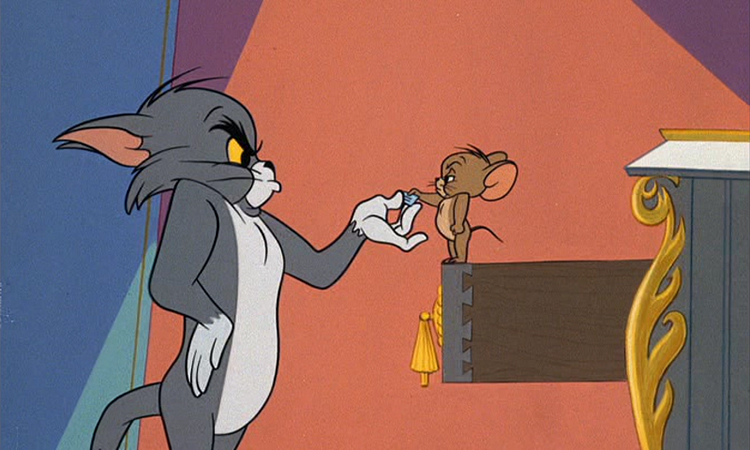
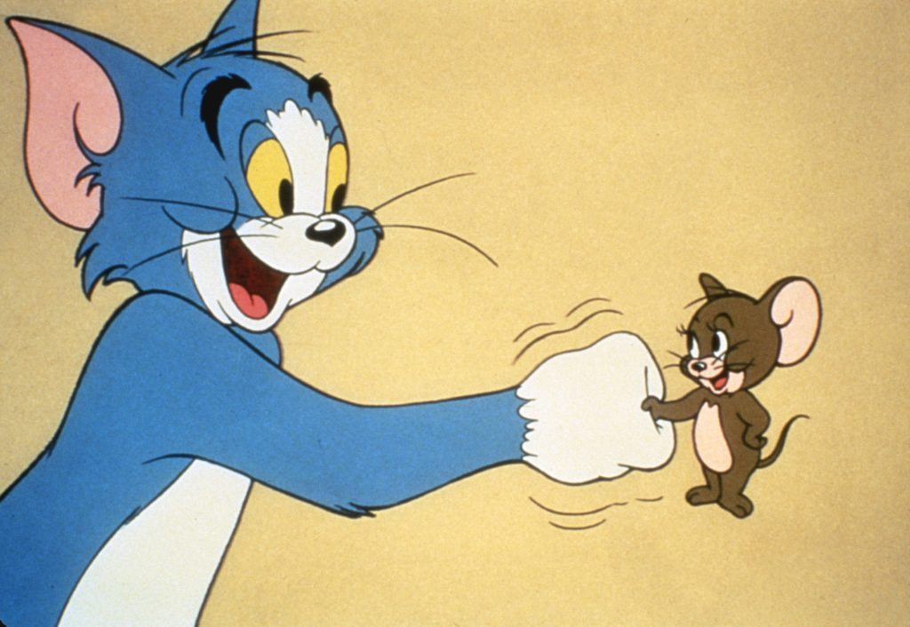
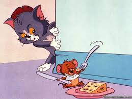

About Tom
Thomas "Tom" Cat is a fictional character and one of the two main protagonists in Metro-Goldwyn-Mayer's series of Tom and Jerry theatrical cartoon short films, created by William Hanna and Joseph Barbera. Tom is a blue/grey anthropomorphic domestic short-haired cat who first appeared in the 1940 animated short Puss Gets the Boot. Tom was originally known as "Jasper" during his debut in that short, however, beginning from his next appearance in The Midnight Snack and onwards, he is known as "Tom" or "Thomas".
How Tom used to look like:
    